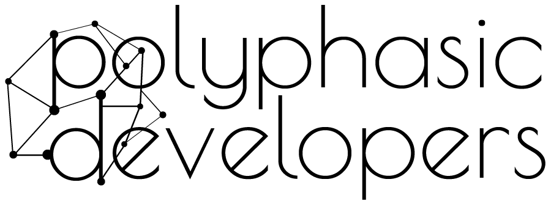
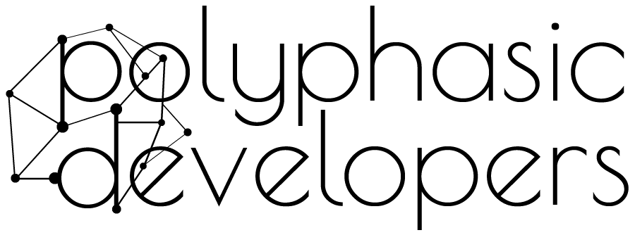

Welcome to my site, this is a breif introduction to myself and my work. Here you will find a holding place for all of my socials and a breif repertoire of information about me pertaining to my work.
In August of 2016 together with Brian, came to
conclusion that we were fed up with our career trajectories. We had dabbled with technology, marketing and web development for many
years collaboratively, but never sought to make it into a prospective income.
Then came the idea, I had been looking for an income source, to supplement my plans to travel the European continent on four wheels (turned out to be six)
and my passion for technology finally we came up with the concept of Polyphasic Developers.
The plan was to provide a source of income for my travels, a stable income that could be used to replace a regular 9-5 without the need to be situated in one place.
We didn't want to become yet another web developer company that just tried to win projects with flashy websites and proposals. We wanted to do something
that we could stand for, something that we could be proud of. We wanted to change the game.
Thus, Polyphasic Dev was born and nurtured into what we are today, we've grown, advanced, improved, refined, expanded and finally boast a wealth of
high-end projects with higher end clients and are proud to introduce our line of software to the world. Projects we have been desperate to glyphicon-map-marker
but lacked the incentive or the time to bring them into fruition.